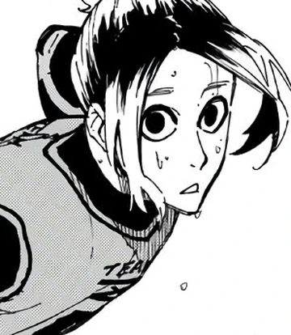
Gagamaru serves as Blue Lock's savior, defending the goal post with everything he has. Being Blue Lock's goal keeper, he is tasked to throw himself to the ball if needed all to prevent the other team from scoring a goal against this rising team of stars.
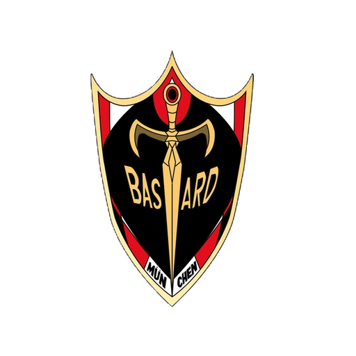
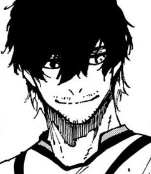
Slithering into the field, TEAM CAPTAIN Aiku shuts down any opportunity for the other team to score a goal against Blue Lock. With his anticipation and crazy gambles, he is able to react to plays being made in such short periods of time.

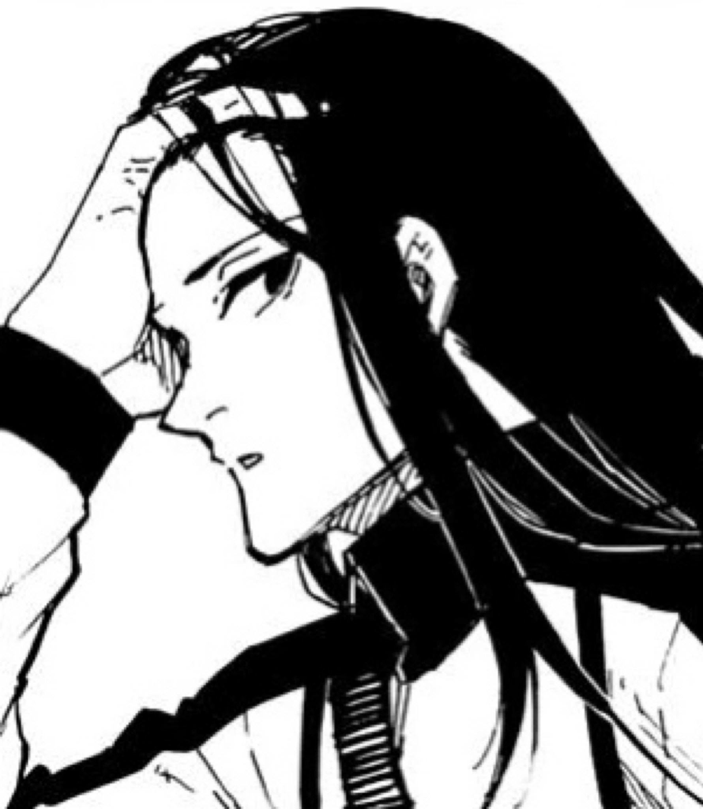
The tower of Blue Lock, the ruler of skies, Aryu with his high vertical coverage defends with everything he has. Taking advantage of his long limbs, he gets a farther and wider reach on the ball than his opponents.
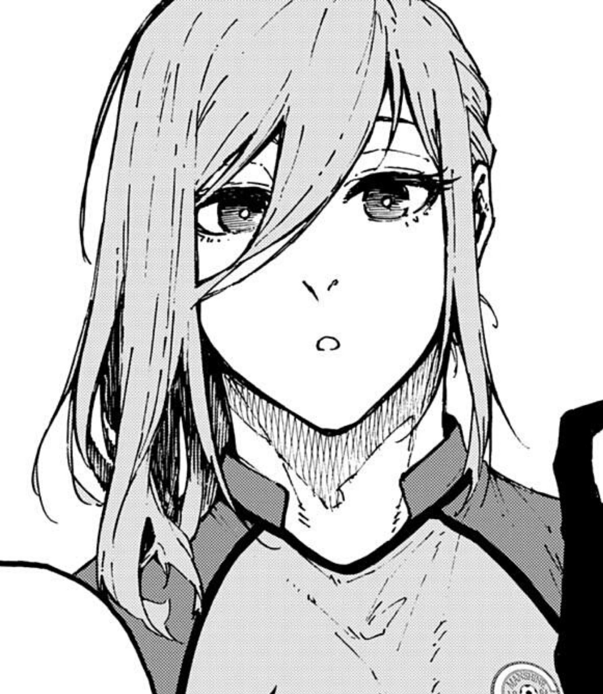
Hyoma Chigiri, the speedster of Blue Lock. Chigiri is able to get the ball at unbelievable distances using his speed, enabling him to distance himself from opponents overtime. It is never a good idea to leave Chigiri open, for when he gets the chance at an open field, within the blink of an eye, the ball will end up on the other side.

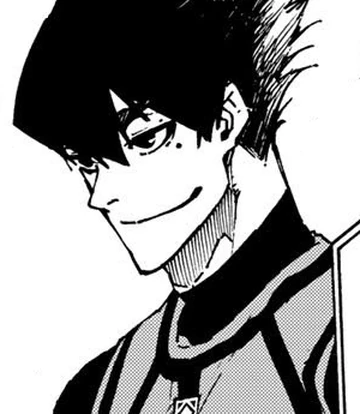
Tabito Karasu, the assassin. He is able to pinpoint, make, and strike vulnerabilities that the opponents have. On the field, he is no fool, he makes moves with great consideration and anticipations being able to get the ball to the other side, or preventing the ball to getting into their goal. He will appear anywhere from nowhere at any given moment, to deliver one blow to give way to opportunity.

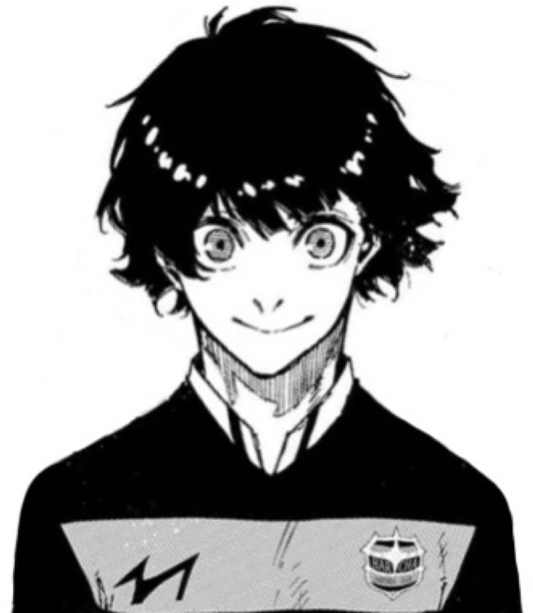
Meguru Bachira, the dancer of Blue Lock. His dribbling skills is something truly remarkable. He is able to evade opponents with ease and pierce through their defenses effectively. Alongside his dribbling comes his chemistry with his teammates. Because of his insane playmaking, his teammates are able to follow-up with his moves and put together a play that gives them a major opportunity of scoring.

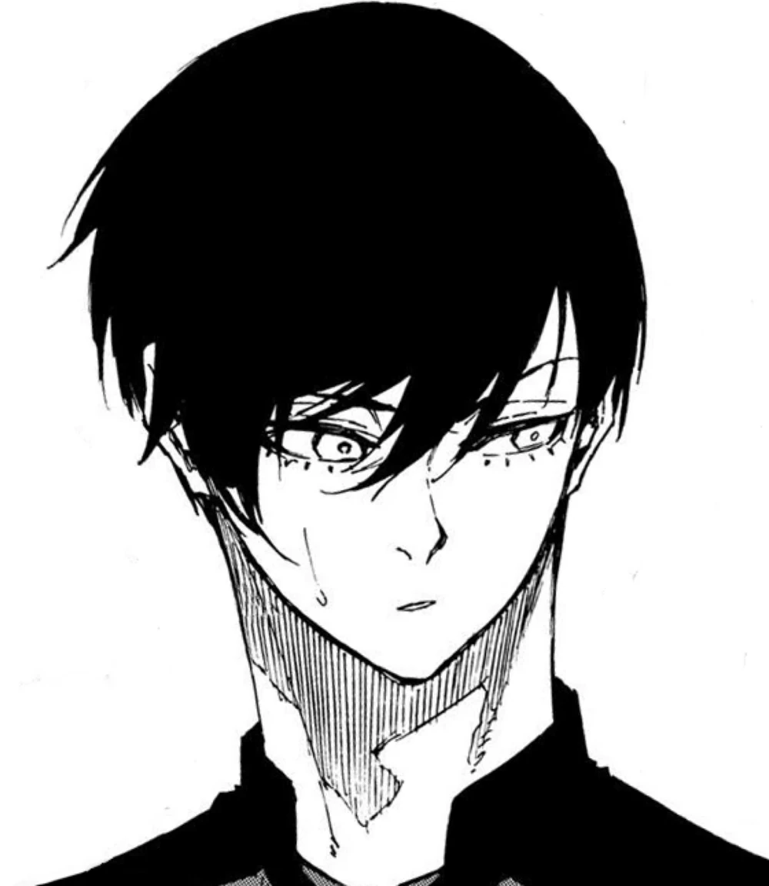
Rin Itoshi, a prodigy or merely a little brother of one? Rin's domination in the field isn't from teamplays, but simply his own decisions and movements in the field. He forces his way through with such fluid and precise movements while getting through defenses. When it comes to scoring, it isn't regular shots, you won't even know where the ball will go. Could it be the left? The Right? Where will it direct to? You will only know when he finally shoots his very own curved shot. He relys on himself, no one else, all in the pursuit of surpassing his older brother.
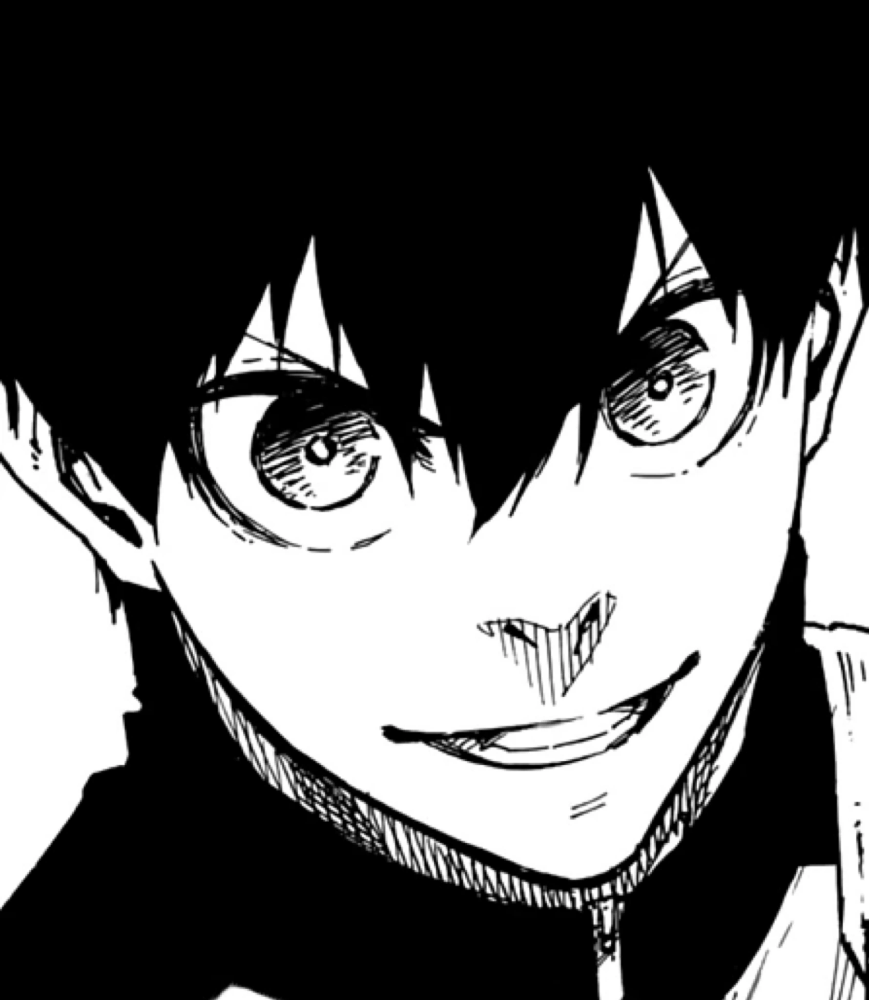
Yoichi Isagi, Blue Lock's very own special trump card. He doesn't have crazy natural born skills like dribbling, shooting, or a great body. He instead, has a mind beyond anyone else's in the field, one only some of the best players are able to understand. He breaks the field down into puzzle, with pieces that he thinks can be changed in order to reach a goal. Whatever these pieces call for Isagi to do, he takes the necessary course of action to achieve the ultimate formula for victory. He doesn't thrive alone, he uses everyone as puzzle pieces that will get him to the glory that he wants to achieve.
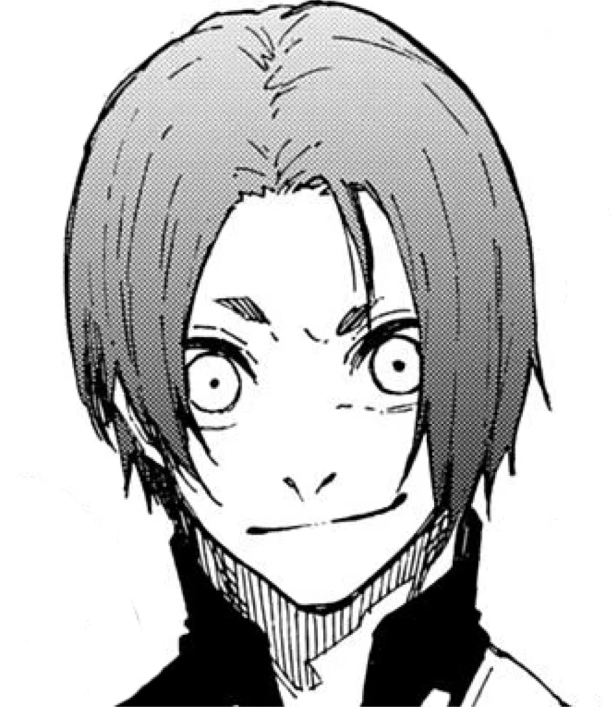
The Chameleon, The Copycat, Reo Mikage is one of the most flexible players in Blue Lock's arsenal of superstars. His ability to copy other player's moves and playstyle makes him important and essential to Blue Lock's gameplans when they think one of a player isn't enough. Already having trouble with one? Try two to double the trouble.
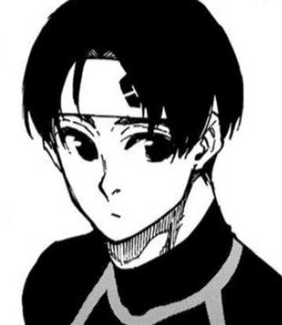
Nijiro Nanase is the underdog of the Blue Lock U-20 team. Most people underestimate his abilities and his skills. However, just like Isagi, Nanase uses his mind as his weapon. He isn't as good as the rest at executing their plan in mind, but he is great at being there for the team whenever they need help.
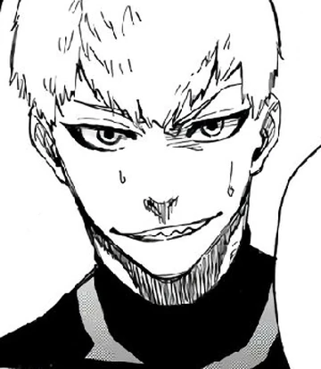
Jingro Raichi is the aggressive and energetic player of Blue Lock, not exactly brain but can definitely give brawns. His drive to prove he's better than everyone and try to score a goal is all that he needs to keep trying and trying through brute force until something works. Not exactly the best way, but it gets the job done.
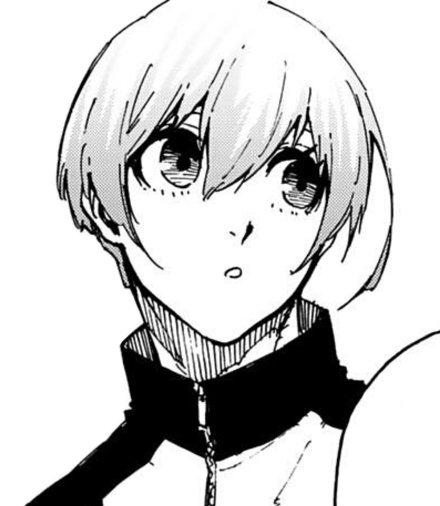
Hiori is a different kind of egoist, he doesn't score himself, he helps get the score. Unlike other Blue Lock players who only aim to score for themselves, Hiori is a more passive player compared to the rest, his playstyle isn't made for scoring, but for assisting. His specialty is passing the ball around with such trajectory, accuracy, and control that it is even comparable to levels of great players.
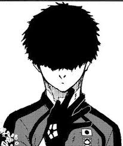
Silent but lethal. Niko may be quiet, but in his mind, he has already knows what he needs to do and how to do it. He carries out defensive manuveurs with careful calculation and perception of the situation in the field. This silence that he has plays well into his role in the field as he becomes very unpredictable for the enemy team.
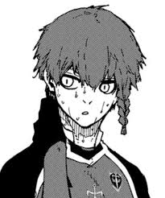
Kurona is yet another one of Blue Lock's elite support and link-up players who focus mainly on assisting and guiding the play to the win. With his specialty of the one-two passes, Kurona's chemistry with other players can become too fast and unpredictable for the enemy teamm to anticipate.
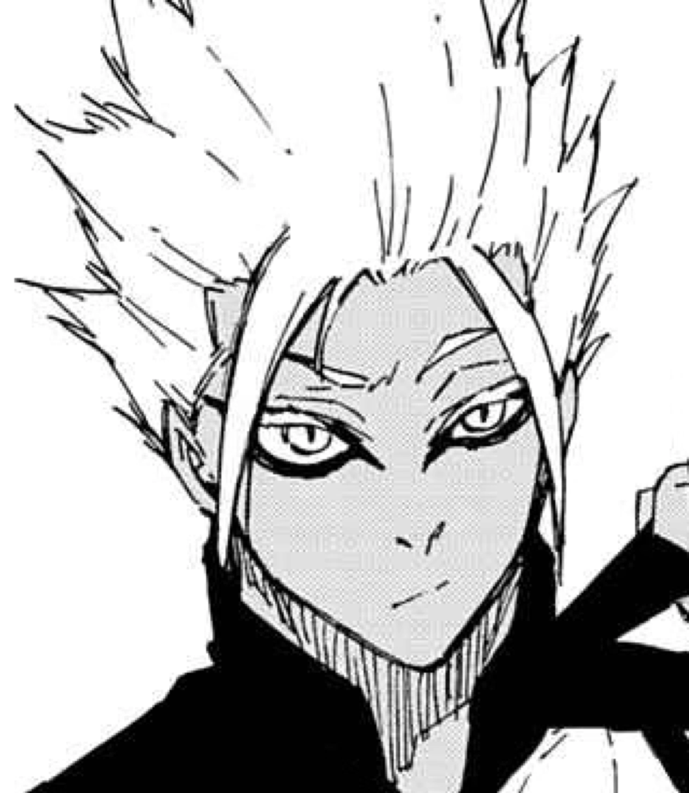
Ryusei Shidou, The Demon of Blue Lock. Shidou explodes into the field and disarrays everyone including his own teammates with his irrational nature. His unpredictable on and off the ball movements catches people off guard and places him in such a position to score a goal on the enemy team. Speaking of scoring, his physical capabilities allow him to shoot at crazy angles and positions with immense power.
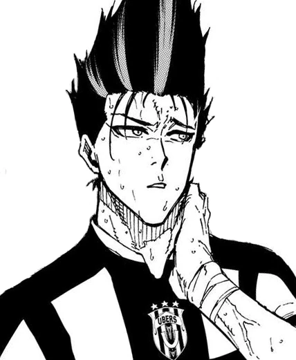
Barou is Blue Lock's joker, the self proclaimed king is full of greed and hunger for glory. He wants crowds roaring for him in awe, excitement, and joy, praising him and only him for his skills. Barou powers through enemies with his chop dribbles and unpredictable plays such as stealing the ball off his own teammate. His physical capabilities make him quite a brute in the field and letting him win most physical battles in the field. The king is no fraud, he can backup all this pride and drive that he has to prove that he is only one of the best there is.
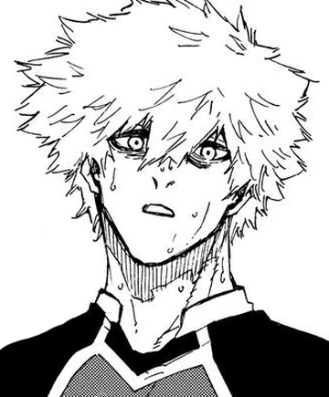
The hero who went back on his word. The hero who fell and realized that he cannot save everyone. The hero who has now lost himself and the dreams he once held. Kunigami, the wildcard of Blue Lock is built out of challenges and hardships of realizing that there can only be a few at the very top. He is the muscle of Blue Lock, the unstoppable force that they need to tear down the defensive line that enemies have, the player that they can rely on to perform at all times. Because of Kunigami's strength, his shots are incredibly strong and fast which gives Blue Lock a cannon on the field. He is also able to dominate other players when it comes to pure strength battles, which gives them a trump card in recovering a second ball. The Fallen Hero will one day make a return, not just for himself, but for Japan.
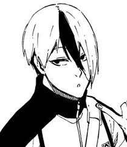
The Ninja of Blue Lock, light on his feet, and appears anywhere on the field. If there is the assassin, the ninja is there to capitalize on the assassin's efforts. He is the one that makes up for the assassin's weaknesses. Otoya's speed makes him unpredictable as he can disappear and reappear anywhere in the field. His quite silent too, he doesn't let enemies see where he is which leaves them vulnerable to be past and blitzed through by the ball and be put on a goal less.
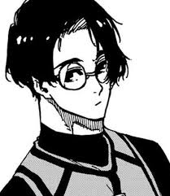
Yukimiya is one of Blue Lock's natural-born dribblers, alongside Bachira, Yukimiya gets through defenses with his dribbling and gets blitzes enemies in the blink of an eye. His dribbling can take him really farther into the other side and open an opportunity for him to score a goal. He is one of Blue Lock's slippery players, get too distracted and you will be defending air.
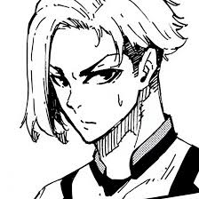
Sendo comes from the previous U-20 Team of Japan prior to Blue Lock taking over. He isn't exactly the best at the Blue Lock's lineup, however, Aiku definitely sees potential in him. There is not much else known about him but maybe he will become better in the future and deliver unexpected results to his team.
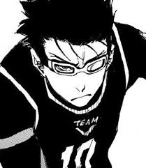
Zentetsu, Blue Lock's 2nd speedster. Unlike other players, he explodes with speed. His acceleration is what makes him so special compared to others enabling him to be placed into advantageous positions in the field in short periods of time and catching the other team off guard. Though he isn't able to score as good as the rest, he is able to give the team a great opportunity to run the play.
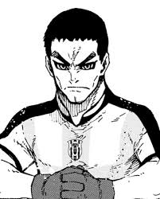
The Goal Keeper of the previous U-20 team, Fukaku serves as the substitute of Gagamaru when he is unable to continue. Being the other guardian of Blue Lock, he has amazing reflexes and physical capabilities that allow him to leap crazy distances. Not much is mentioned about Fukaku, but he is definitely not to be underestimated.
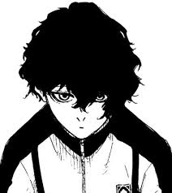
Kiyora is one of the most versatile players of Blue Lock makingg him a force to be reckoned with. With having a rating of A on all stats, he is able to be anything in the field with his own playstyle. There is barely enough information on Kiyora as they have shown only 1 match he played in. Nontheless, he is still a great player in Blue Lock's lineup.
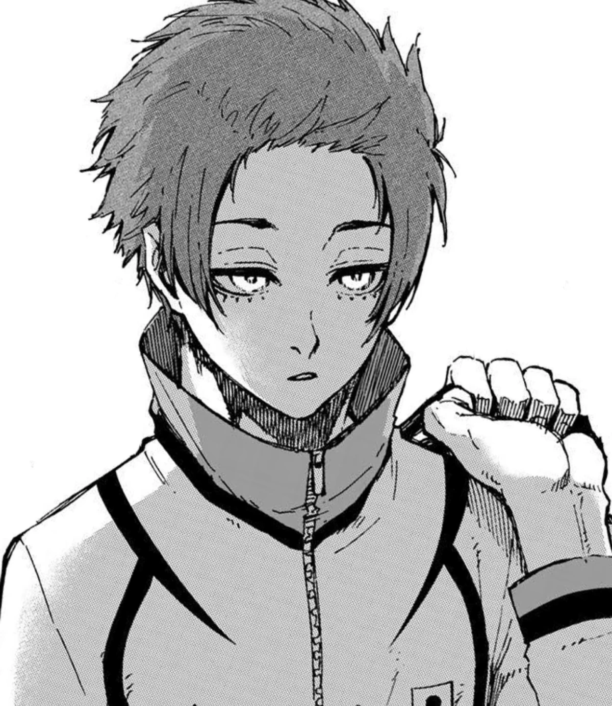
Info